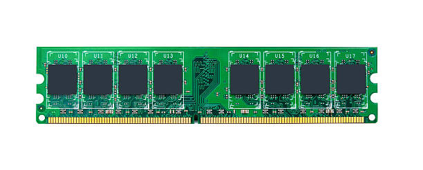
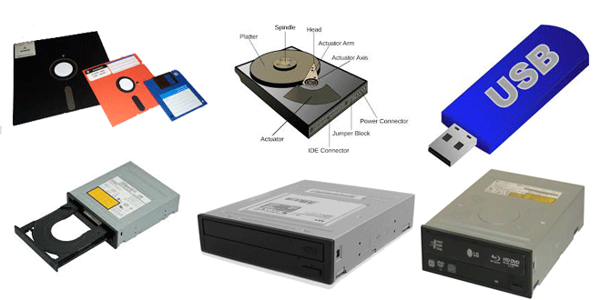

Memory Hierarchy: RAM, ROM, Cache, and Secondary Storage
The memory hierarchy is one of the fundamental concepts in computer architecture that defines how different
types of memory interact with one another. It is designed to optimize the use of memory in a way that
balances cost, speed, and capacity. Memory can be categorized into primary, secondary, and cache memory,
each serving its specific role. In this article, we will take a deep dive into each of these memory types,
their characteristics, advantages, and how they work together to enhance the overall performance of a
computer system.
1. RAM (Random Access Memory)
RAM is one of the most critical components of a computer's memory system. It is known as the primary memory or main memory. RAM allows the CPU to quickly access data that is actively being processed. Since RAM is volatile, it loses all of its data when the computer is powered off.

RAM provides fast access to data and instructions for the CPU.
Characteristics of RAM:
- Volatile: When power is turned off, the contents of RAM are lost. This makes it unsuitable for long-term data storage.
- Fast Access: RAM allows quick read and write operations, enabling faster data retrieval for running programs and active processes.
- Temporary Storage: It is used to store data temporarily that is actively being worked on, such as open programs or files.
- Capacity: RAM typically ranges from 4GB to 64GB in consumer-level devices, but high-end systems can have much more.
- Types: RAM comes in different forms, including Dynamic RAM (DRAM) and Static RAM (SRAM), each with different characteristics. DRAM is more common in consumer devices, while SRAM is faster but more expensive and used in cache memory.
Role of RAM in Performance:
The performance of a system is highly dependent on the amount of RAM available. Insufficient RAM can lead to sluggish performance because the operating system must offload data to slower storage devices like secondary storage, resulting in slower response times. The larger the RAM, the more data can be processed simultaneously, which is especially beneficial in multitasking environments and resource-intensive applications like video editing or gaming.
2. ROM (Read-Only Memory)
ROM is a type of non-volatile memory used in computers to store firmware, which is software that is permanently programmed into the computer. Unlike RAM, ROM retains its data even when the power is turned off, making it ideal for storing essential instructions that need to be available at all times, such as the computer’s boot-up sequence.

ROM stores permanent system instructions, such as boot-up procedures.
Characteristics of ROM:
- Non-volatile: ROM retains data even after the system is powered off, making it ideal for storing system-critical information that must be available at boot time.
- Permanent Data: Once written, data cannot easily be altered (hence, "read-only"). This makes ROM a secure medium for storing important data like BIOS or boot loaders.
- Read-Only: Data stored in ROM can only be read under normal conditions; however, certain types of ROM (like EEPROM) can be reprogrammed if necessary.
Common Types of ROM:
- EPROM (Erasable Programmable ROM): Can be erased and reprogrammed using UV light.
- EEPROM (Electrically Erasable Programmable ROM): Can be electrically erased and rewritten, which is useful for storing data that might need to be updated.
- Flash Memory: A type of EEPROM that is commonly used in SSDs and USB flash drives for high-speed, durable storage.
3. Cache Memory
Cache memory is a small but extremely fast type of memory located within or very close to the CPU. Its role is to store frequently accessed data and instructions so that the CPU can access them more quickly than retrieving them from RAM. Cache memory improves the overall speed and efficiency of the system by reducing the time it takes for the CPU to fetch data.

Cache Memory stores data that the CPU is likely to access frequently.
Characteristics of Cache Memory:
- Fastest Memory: Cache memory is significantly faster than both RAM and secondary storage. It is typically built directly into the CPU or located near it on the motherboard.
- Small in Size: Cache memory is much smaller in size compared to RAM, often in the range of kilobytes to a few megabytes.
- Temporary Storage: It stores a small subset of data that the CPU frequently uses to prevent the bottleneck of accessing slower memory (like RAM).
- Levels of Cache: Cache memory is often divided into multiple levels:
- L1 Cache: The smallest and fastest cache, located directly on the CPU chip.
- L2 Cache: Slightly larger but slower than L1, located either on the CPU chip or nearby on the motherboard.
- L3 Cache: The largest and slowest cache, typically shared across multiple CPU cores.
How Cache Enhances Performance:
By storing frequently accessed data closer to the CPU, cache memory reduces the time it takes to retrieve that data, which speeds up the overall performance of the system. A higher amount of cache memory, especially L3 cache, allows the CPU to handle more operations simultaneously, which is important for gaming, video editing, and other processor-heavy tasks.
4. Secondary Storage
Secondary storage is used to store data permanently or for long-term retention. Unlike RAM and cache memory, which are used for temporary data storage, secondary storage holds data even when the computer is powered off. It provides much larger capacity than RAM or cache but is slower to access. Secondary storage devices are essential for long-term data storage, such as operating systems, applications, documents, and media files.

Secondary Storage includes devices like hard drives and SSDs for long-term data storage.
Types of Secondary Storage:
- Hard Disk Drives (HDD):
The traditional storage device that uses spinning disks to store data magnetically.
HDDs offer large storage capacities but slower access speeds compared to SSDs.
- Solid-State Drives (SSD):
A modern storage device that uses NAND flash memory to store data.
SSDs offer faster read/write speeds than HDDs, making them ideal for high-performance applications.
- Optical Discs (CDs/DVDs):
Used for storing music, video, and software, though less commonly used today due to the rise of
cloud storage and larger physical storage devices.
- USB Flash Drives:
Portable devices used for data transfer, with faster speeds and convenience for small-scale storage
needs.
Role of Secondary Storage:
Secondary storage provides essential capabilities for data persistence, enabling users to store massive amounts of data for long-term use. It ensures that data is not lost when the system is powered off. While slower than primary memory, it is a crucial part of a balanced memory hierarchy, providing a place to keep operating systems, applications, user data, and backups.
Memory Hierarchy Overview
The memory hierarchy is structured in such a way that different types of memory provide varying speeds and capacities. At the top of the hierarchy, we have the fastest and most expensive types of memory, which are also the smallest in size. At the bottom, we have larger but slower forms of memory. Here's a summary:
- Registers: Fastest, smallest, located directly inside the CPU.
- Cache Memory (L1, L2, L3): Small but extremely fast memory used by the CPU for immediate access.
- Main Memory (RAM): Larger than cache, provides fast access but is still volatile.
- Secondary Storage: Non-volatile, large storage for long-term data retention, such as HDDs and SSDs.
This hierarchy ensures that the computer can access the most frequently used data in the fastest possible time while still being able to handle large amounts of less frequently used data.